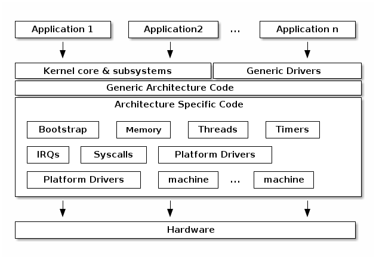

Architecture Layer¶
Lecture objectives:¶
- Overview of the arch layer
- Overview of the boot process
Overview of the arch layer¶
{kind=link}
Boot strap¶
- The first kernel code that runs
- Typically runs with the MMU disabled
- Move / Relocate kernel code
Boot strap¶
- The first kernel code that runs
- Typically runs with the MMU disabled
- Copy bootloader arguments and determine kernel run location
- Move / relocate kernel code to final location
- Initial MMU setup - map the kernel
Memory setup¶
- Determine available memory and setup the boot memory allocator
- Manages memory regions before the page allocator is setup
- Bootmem - used a bitmap to track free blocks
- Memblock - deprecates bootmem and adds support for memory ranges
- Supports both physical and virtual addresses
- support NUMA architectures
MMU management¶
- Implements the generic page table manipulation APIs: types, accessors, flags
- Implement TLB management APIs: flush, invalidate
Thread Management¶
- Defines the thread type (struct thread_info) and implements functions for allocating threads (if needed)
- Implement
copy_thread()andswitch_context()
Time Management¶
- Setup the timer tick and provide a time source
- Mostly transitioned to platform drivers
- clock_event_device - for scheduling timers
- clocksource - for reading the time
IRQs and exception management¶
- Define interrupt and exception handlers / entry points
- Setup priorities
- Platform drivers for interrupt controllers
System calls¶
- Define system call entry point(s)
- Implement user-space access primitives (e.g. copy_to_user)
Platform Drivers¶
- Platform and architecture specific drivers
- Bindings to platform device enumeration methods (e.g. device tree or ACPI)
Machine specific code¶
- Some architectures use a "machine" / "platform" abstraction
- Typical for architecture used in embedded systems with a lot of variety (e.g. ARM, powerPC)